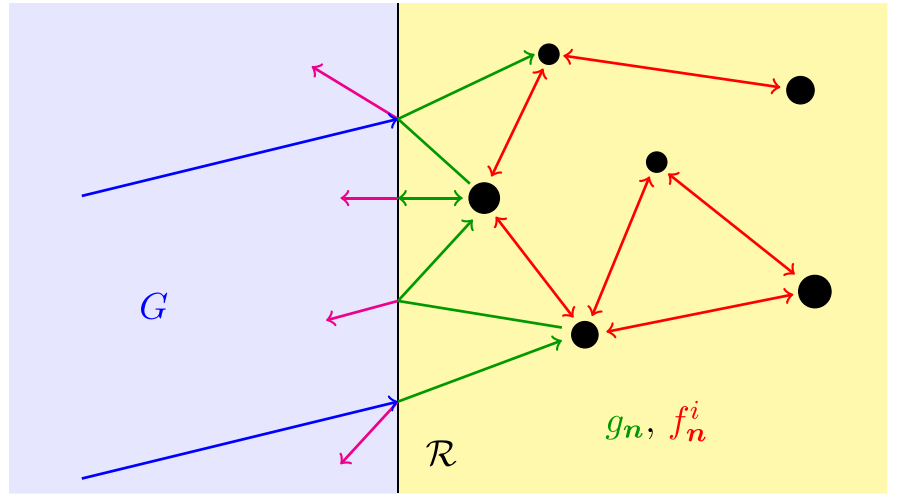
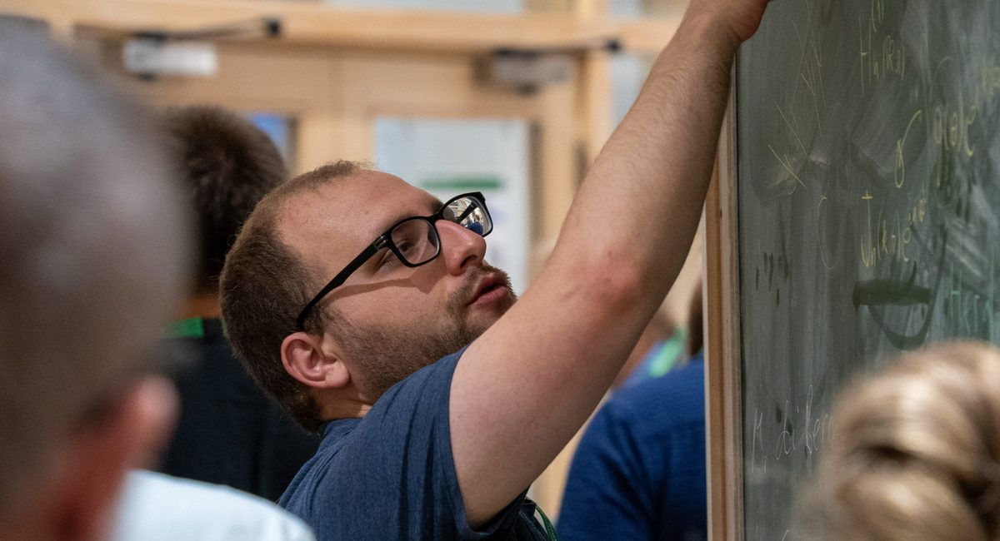
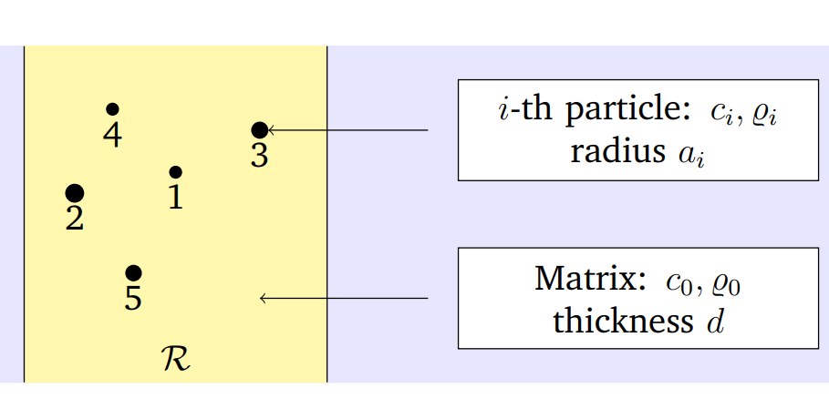
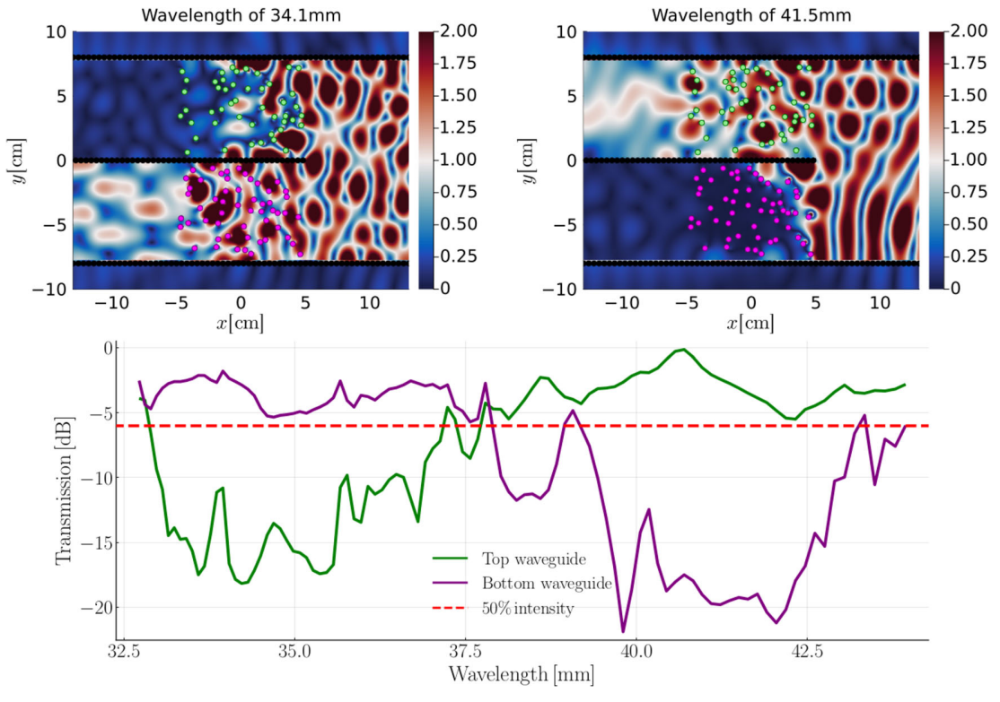
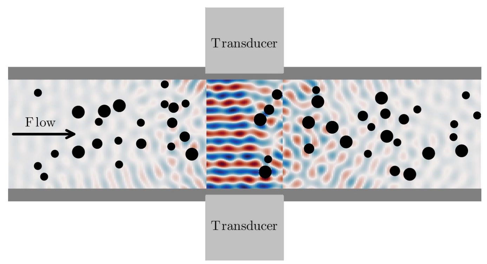

Waves in random particulate media
How sound and ultrasound travel through materials full of randomly placed particles, using multiple scattering theory and ensemble averaging to predict the average wave across a broad frequency range.
I am a Knowledge Transfer Partnership (KTP) Associate at the University of Sheffield, working with Johnson Matthey to develop next-generation ultrasonic sensors that measure particle size distributions in industrial processes.
My research combines applied mathematics, physics and engineering to understand how waves propagate and scatter in random particulate materials, such as suspensions, emulsions and powders, and to turn that understanding into practical measurement technology. I enjoy the whole path from theory and numerical methods to laboratory experiments and working hardware.
Current project · Nov 2025 – present
Knowledge Transfer Partnership · University of Sheffield & Johnson Matthey
Selected as the sole Associate to lead a collaborative R&D project bridging academic innovation and industrial application. I am responsible for the end-to-end development and testing of a novel ultrasonic sensor technology for particle size distribution measurements.
I designed the initial prototype for the sensor from scratch, within collaboration with several technicians in the University of Sheffield and engineers in Johnson Matthey. The design process included manufacturing specification, component sourcing and full-system assembly.

From multiple scattering theory to instruments that work on a production line.

How sound and ultrasound travel through materials full of randomly placed particles, using multiple scattering theory and ensemble averaging to predict the average wave across a broad frequency range.

Reflection and transmission by halfspaces and layers filled with particles, so that particulate materials can be characterised from the ultrasound they send back.

Designing acoustic band gaps with randomly distributed sub-wavelength Helmholtz resonators, and the physical bounds on what such disordered metamaterials can achieve.

Turning models into in-line ultrasonic instruments for particle sizing, from experiment design with MHz immersion transducers to installation-ready hardware with Johnson Matthey.
npj Acoustics 2, 10 (2026)
New Journal of Physics 26, 123033 (2024)
New Journal of Physics 26, 063002 (2024)
Proceedings of the Royal Society A 480, 20230660 (2024)
Bremen Workshop on Light Scattering (2025)
Phononics 2023, Manchester
Mathematics in Industry Reports (2023): European Study Group with Industry 171, with PepsiCo
PhD thesis, University of Sheffield (2026)
MSc thesis, University of Campinas (2021)
14 talks, 6 posters and 1 webinar since 2022.
I am always happy to talk about wave scattering, ultrasonic sensing and industrial measurement problems. Feel free to get in touch.